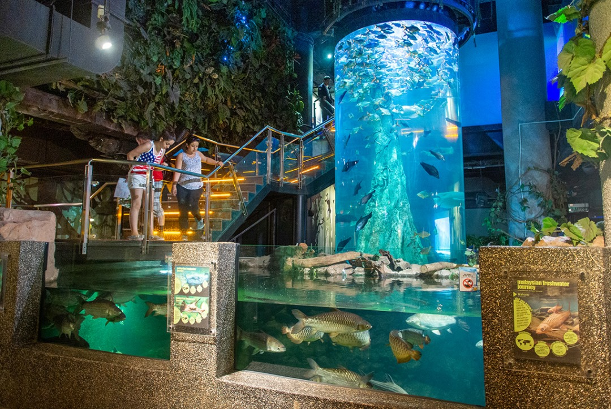

Aquaria KLCC, located beneath the Kuala Lumpur Convention Centre, is a state-of-the-art oceanarium showcasing over 5,000 aquatic and land-bound creatures from Malaysia and around the world. Visitors can walk through a 90-meter-long underwater tunnel to see sharks, rays, and other sea creatures up close.
The oceanarium features exhibits such as the Flooded Forest, which mimics a Malaysian rainforest, and the Living Ocean, which houses various species of fish and coral. Interactive exhibits and feeding sessions provide educational and entertaining experiences for all ages, making Aquaria KLCC a must-visit attraction in Kuala Lumpur.